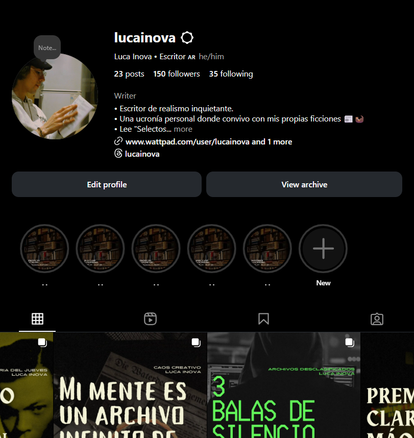
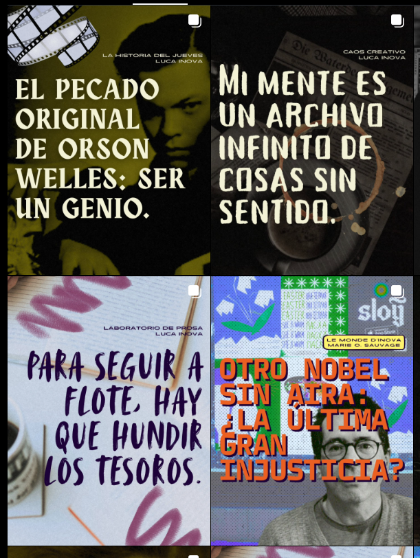
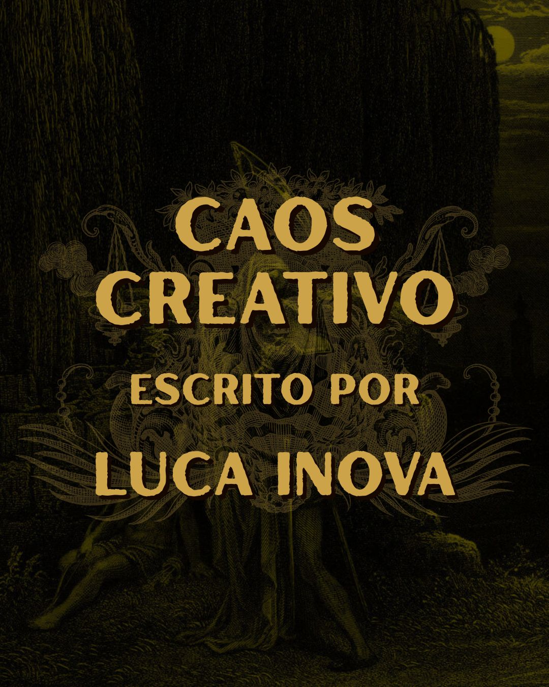
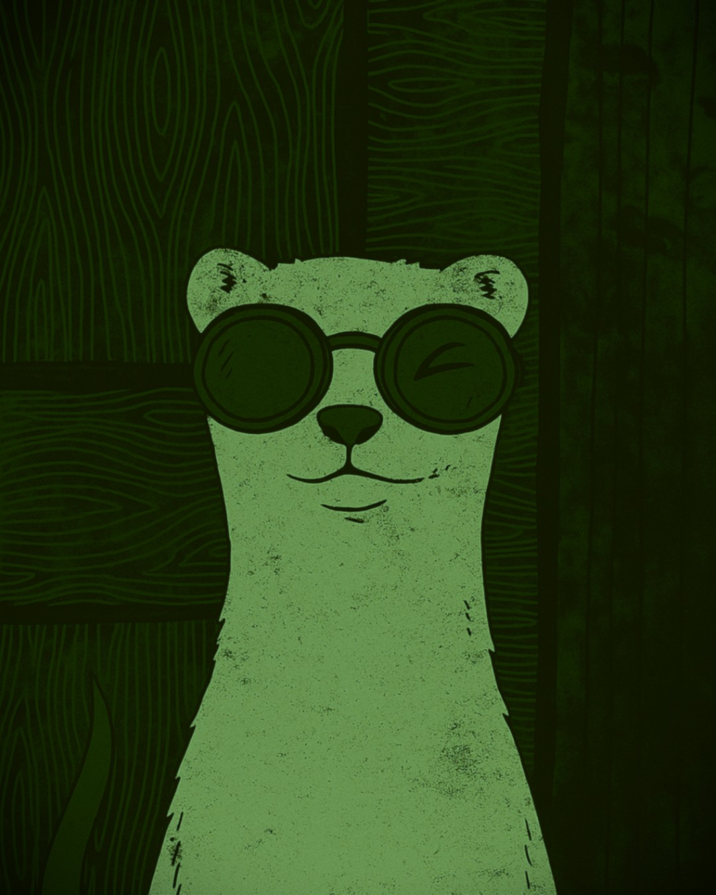
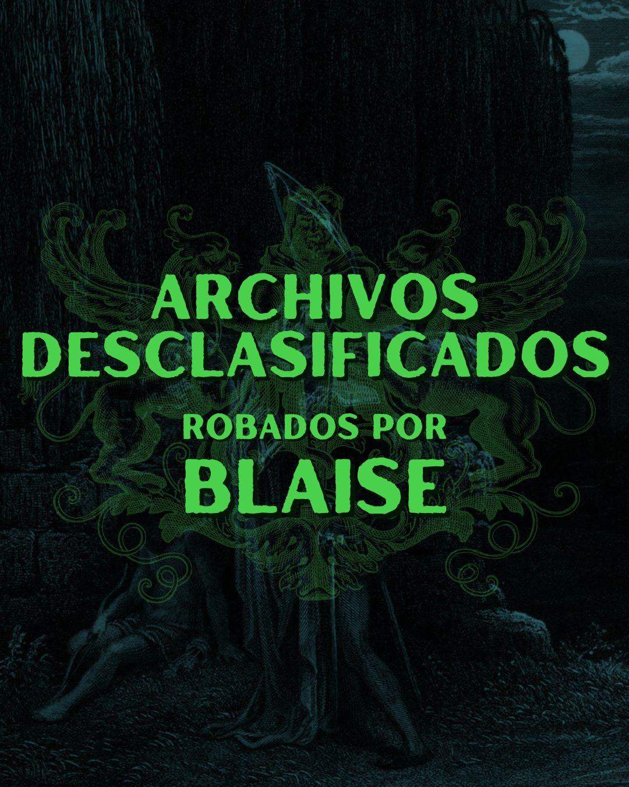

Diario de Escritura
La narrativa no solo se lee; se observa. Fragmentos, texturas y el detrás de escena de la intriga.
Seguir en InstagramMarie O. Sauvage
La PeriodistaDesde la Sorbona hasta el caos de Capital Federal. Cito a Foucault mientras como fainá y explico la literatura con memes. El rigor es importante, pero el estilo es innegociable. Voilá.
Luca Inova
El Autor
La escritura como acto de ordenar la niebla mental. Aquí no hay gurús, solo un explorador perdido compartiendo su bitácora de miedos, atmósferas y la búsqueda paradójica de la identidad.

Blaise
El Contrabandista
Pff, ¿seguir las reglas? Eso es para giles. Yo me meto en la papelera de los editores y te traigo la data que nadie te cuenta. Tips al hueso, sin chamuyo y de contrabando.
Identifica la voz para desbloquear la señal.